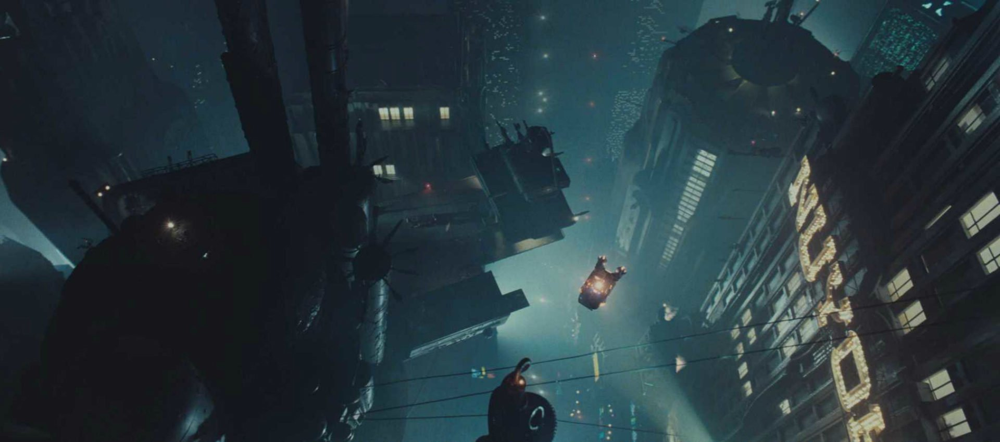

赛博朋克书籍作品简介
赛博朋克是一个充满创意和科幻想象的文学流派，涵盖了许多经典作品。以下是一些著名的赛博朋克书籍作品：
- 《神经漫游者》（Neuromancer） - 威廉·吉布森的经典之作，被认为是赛博朋克文学的奠基之作。
- 《雾都孤儿》（Snow Crash） - 尼尔·斯蒂芬森的作品，探讨了虚拟现实和信息社会。
- 《银翼杀手》（Do Androids Dream of Electric Sheep?） - 菲利普·K·狄克的小说，启发了电影《银翼杀手》。
- 《迪斯特罗》（The Diamond Age） - 尼尔·斯蒂芬森的另一部作品，探讨了纳米技术和教育的未来。
这些书籍作品深刻地影响了赛博朋克文化，探讨了科技、社会和人类的未来。
